Account Opening QA Agent
An AI quality-assurance agent that checks scanned account-opening packs on locally run ML models — 96–100% document-check accuracy, 88% of handwriting verified without review.
Simulation on invented forms View Details →18 projects across banking systems, statistical research, dashboards and things built for fun. Most have a live demo.
Systems built for employers and clients — bank projects are described in words only.
An AI quality-assurance agent that checks scanned account-opening packs on locally run ML models — 96–100% document-check accuracy, 88% of handwriting verified without review.
Simulation on invented forms View Details →
Planning, quarterly scorecards, budgets and a four-stage payment approval chain for a 2,000+ member church and its 36 departments.
Interactive demo View Details →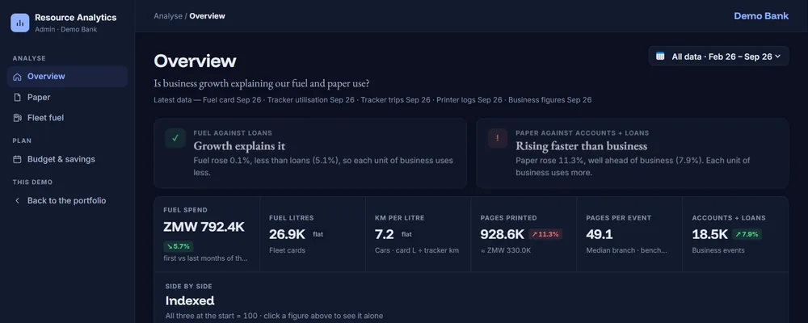
Fuel and paper use measured against business growth, every fuel purchase checked against ERB prices, and a year-end cost forecast.
Interactive demo · fictional bank View Details →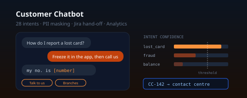
A deterministic bank chatbot: 28 intents, fraud, complaint and lead flows, personal-data masking, Jira hand-off and an analytics dashboard.
Try the demo on this site View Details →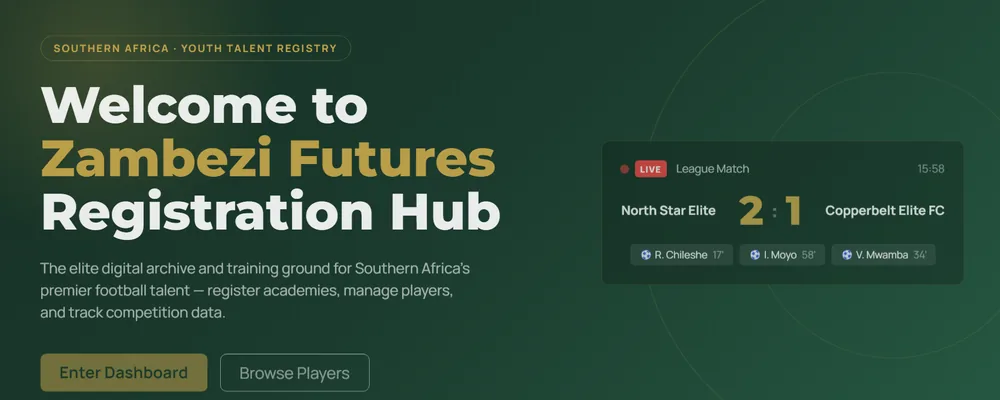
Project-managed a cross-functional team to deliver a youth football platform for 300+ athletes — now live and run by its owners.
Interactive demo View Details →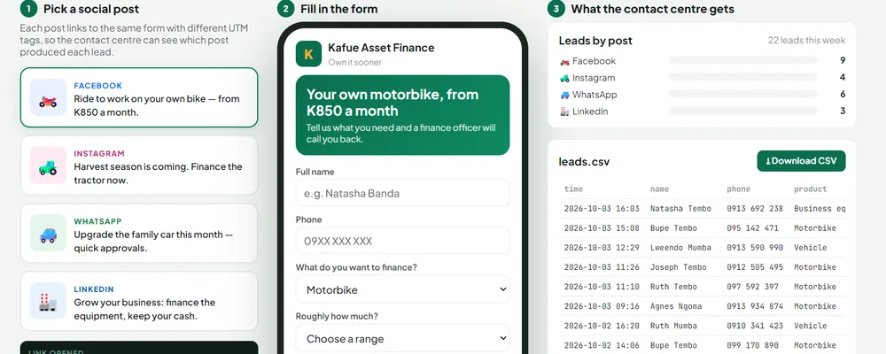
A mobile enquiry form for social campaigns, with UTM tracking so marketing can see which post produced which lead.
Working demo View Details →Statistical research, dashboards and analysis — most with an interactive companion.

Box–Jenkins AR(2) and GARCH(1,1) models on 6,298 daily copper prices (2000–2025): the price level behaves like a random walk, but the volatility is highly predictable.
Interactive demo View Details →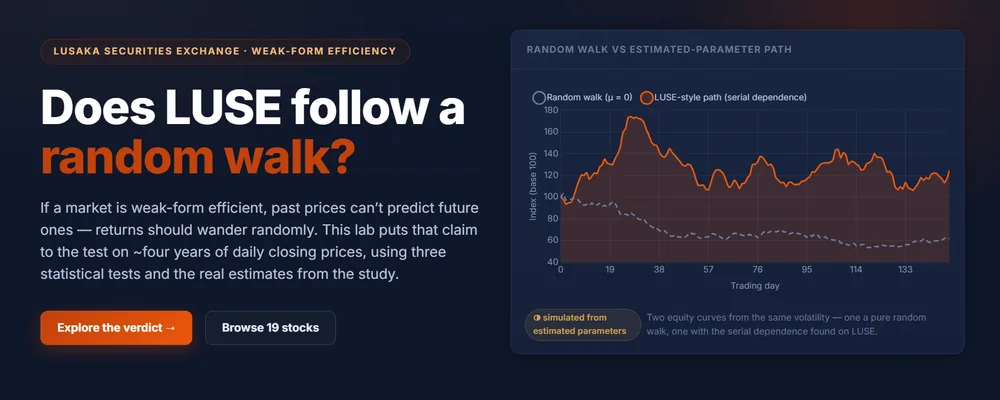
Final-year research testing weak-form market efficiency on Zambia's stock exchange with runs, Ljung–Box and variance-ratio tests.
Interactive demo View Details →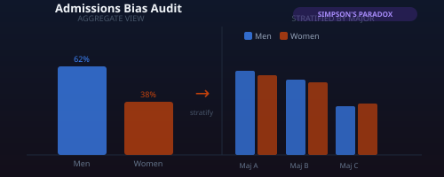
A statistical audit of university admissions revealing that apparent gender bias was actually driven by which majors people applied to.
View Details →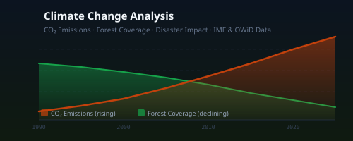
A Power BI report bringing together CO₂ emissions, forest coverage and climate-related disasters into one visual story.
View Details →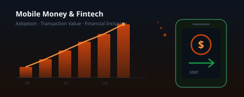
A Power BI dashboard tracking mobile money growth, transaction value and financial inclusion across Africa, with a focus on Zambia.
View Details →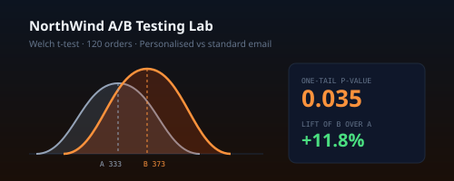
Did personalised emails really raise order values? A Welch t-test on 120 orders: +11.8% lift, one-tail p = 0.035.
View Details →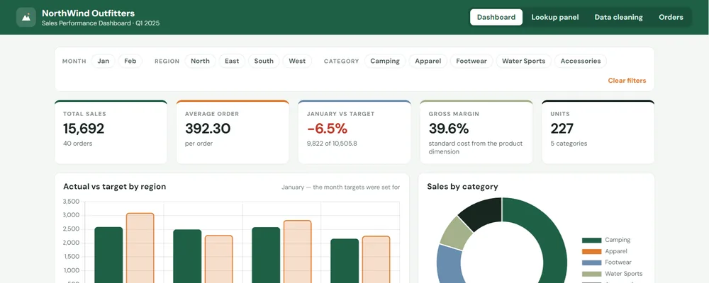
An Excel sales dashboard rebuilt live: January 6.5% under target, slicers, a lookup panel with wildcards, and the February data clean-up.
Live dashboard View Details →Things built for fun, for friends, or as products of my own — the personal apps run on made-up data.
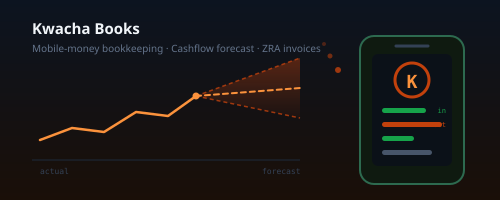
A bookkeeping SaaS for Zambian businesses: import mobile-money statements, auto-categorise income and expenses, forecast cashflow and issue invoices.
View Details →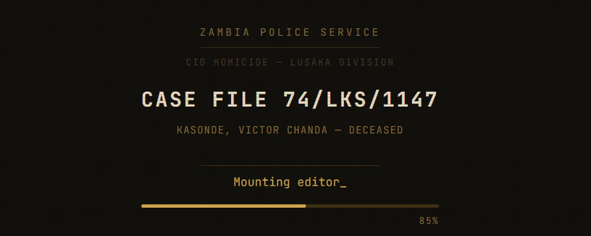
A 1974 Lusaka murder mystery you solve by writing real SQL against the precinct database — SQLite running entirely in your browser.
Playable View Details →
A basketball franchise management game: roster, trades, salary cap, arena prices, season simulation and analytics.
Playable View Details →
A personal real-time party app for six friends: a private survey before the day, then ~25 synced games on phones and a TV.
Personal app · playable demo View Details →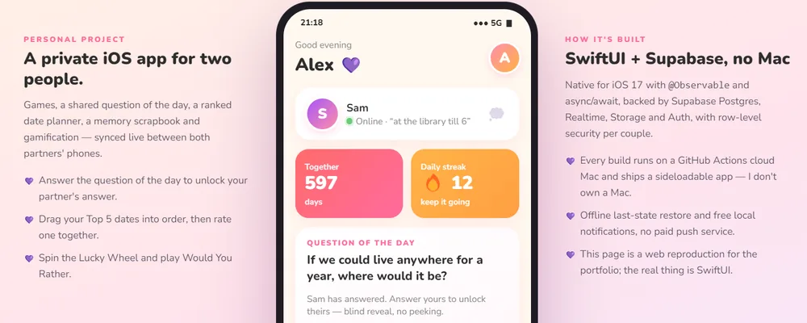
A personal SwiftUI iOS app for two: games, a blind-reveal question of the day, a ranked date planner and a memory scrapbook.
Personal app · web demo View Details →